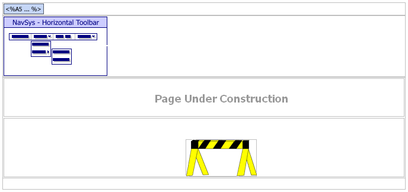
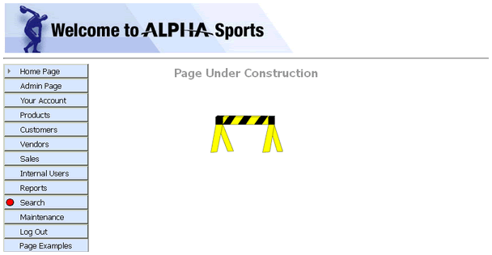

UNDERCONSTRUCT.A5W
Purpose
The AlphaSportsWeb application displays the UNDERCONSTRUCT.A5W page when the user attempts to display an unfinished page.
Description
UNDERCONSTRUCT.A5W contains the NAV_MAIN navigation component.
Links
The Page Examples > Under Construction Internal entry of the NAV_INT navigation component calls the UNDERCONSTRUCT.A5W page.

UNDERCONSTRUCT.A5W in the WYSIWYG tab of the HTML Editor

UNDERCONSTRUCT.A5W in the Browser
Page Source
The location = "" statement removes the highlight from all menu entries.
|
with tmpl_NAV_MAIN location = "" componentName = "NAV_MAIN" end with |
Page Security Information
Always Allowed
See Also
Web Pages?